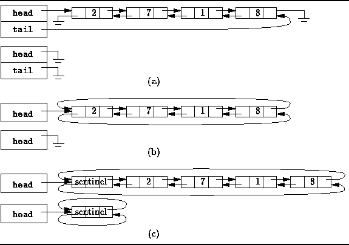

Data Structures and Algorithms
with Object-Oriented Design Patterns in Java
Data Structures and Algorithms
with Object-Oriented Design Patterns in JavaIn the preceding section we saw that the running time of dequeueHead is O(1), but that the running time of dequeueTail is O(n), for the linked-list implementation of a deque. This is because the linked list data structure used, LinkedList, is a singly-linked list . Each element in a singly-linked list contains a single reference--a reference to the successor (next) element of the list. As a result, deleting the head of the linked list is easy: The new head is the successor of the old head.
However, deleting the tail of a linked list is not so easy: The new tail is the predecessor of the original tail. Since there is no reference from the original tail to its predecessor, the predecessor must be found by traversing the linked list from the head. This traversal gives rise to the O(n) running time.
In a doubly-linked list ,
each list element contains two references--one to its successor and one to its predecessor.
There are many different variations of doubly-linked lists:
Figure  illustrates three of them.
illustrates three of them.

Figure: Doubly-linked and circular list variations.
Figure (a) shows the simplest case:
Two variables, say head and tail,
are used to keep track of the list elements.
One of them refers to the first element of the list,
the other refers to the last.
The first element of the list has no predecessor,
therefore that reference is null.
Similarly, the last element has no successor
and the corresponding reference is also null.
In effect, we have two overlapping singly-linked lists
which go in opposite directions.
Figure also shows the representation of an empty list.
In this case the head and tail variables are both null.
A circular, doubly-linked list is shown in
Figure (b).
A circular list is formed by making
use of variables which would otherwise be null:
The last element of the list is made the predecessor of the first element;
the first element, the successor of the last.
The upshot is that we no longer need both a head and tail variable to
keep track of the list.
Even if only a single variable is used,
both the first and the last list elements can be found in constant time.
Finally, Figure (c) shows a circular,
doubly-linked list which has a single sentinel.
This variation is similar to the preceding one in that
both the first and the last list elements can be found in constant time.
This variation has the advantage that no special cases are
required when dealing with an empty list.
Figure shows that the empty list is represented by a list
with exactly one element--the sentinel.
In the case of the empty list,
the sentinel is both is own successor and predecessor.
Since the sentinel is always present,
and since it always has both a successor and a predecessor,
the code for adding elements to the empty list
is identical to that for adding elements to a non-empty list.
 Copyright © 1998 by Bruno R. Preiss, P.Eng. All rights reserved.
Copyright © 1998 by Bruno R. Preiss, P.Eng. All rights reserved.